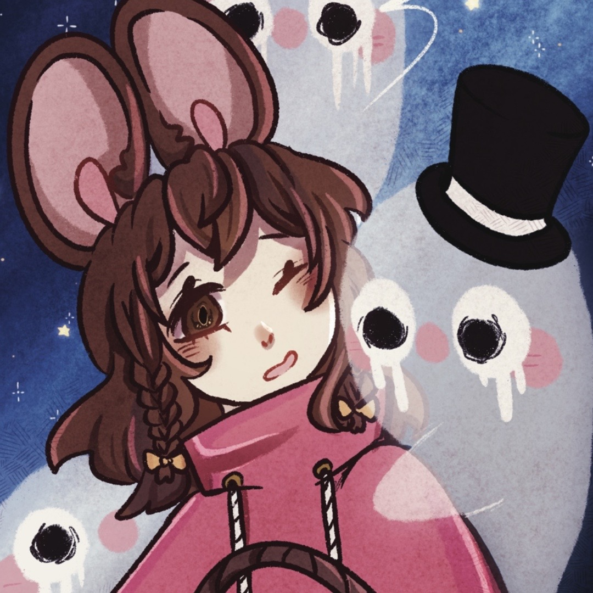

Noelle was the first Mousen to ever be created, she was made for the sole purpose of keeping others
safe (especially children) As Mousen have a drive to ptotect children.
Noelle born as a giant monster is both feared and loved by the Mousen as Hickory didn’t know she
was what was considered frightening since he thought she was cute, they had a father daughter like
relationship.
She protects the clock tower and for thousands of years never left….until the day Hickory Vanished…
Noelle eats others as the feral beast she is, she has a single blade and or kitchen knife she
received from the three blind mice known as her brothers.
Noelle has a bit of a passion for murder and violence and has an attack first ask questions later
attitude, which gets her in trouble.
Noelle has a total of 3 transformations and In her monstrous and Mousen forms she is unable to
speak, making communication rather difficult.
Noelles seems naive yet isn’t, she is simply sheltered and unlearned compared to many.

Noelle follows the letter to find herself at shoebrick manor where she meets 3 others, Madam Hawthorne who
can decipher the letter as she’s aware of why the letter exist, Abbington who will teach her manors and the
basics of this world, Hazel, the second protagonist, a boy hunted by Frogglin and the boy who will be
Noelles love interest after he developes an obsession with her and wants her attention.
These 3 people are critical in the beggining, she will protect Hazel until they end up at the colorless
Carnival.
Back to Top